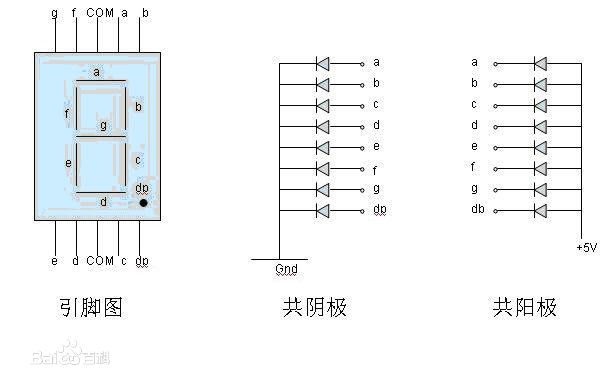
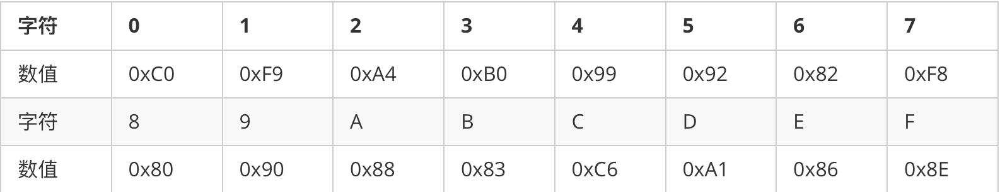
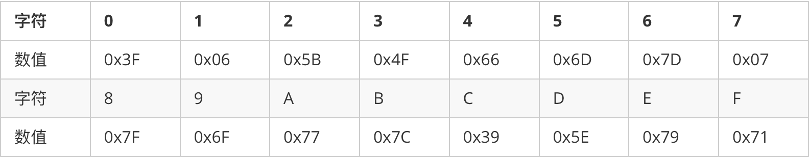
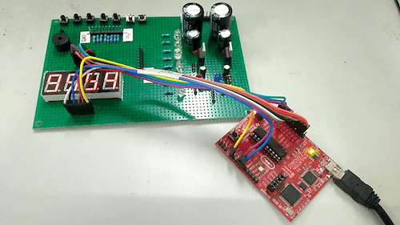

认识七段数码管
数码管的一种是半导体发光器件，数码管可分为七段数码管和八段数码管，区别在于八段数码管比七段数码管多一个用于显示小数点的发光二极管单元 DP（decimal point），其基本单元是发光二极管。
按发光二极管单元连接方式可分为共阳极数码管和共阴极数码管。共阳数码管是指将所有发光二极管的阳极接到一起形成公共阳极(COM)的数码管，共阳数码管在应用时应将公共极 COM 接到 +5V，当某一字段发光二极管的阴极为低电平时，相应字段就点亮，当某一字段的阴极为高电平时，相应字段就不亮。共阴数码管是指将所有发光二极管的阴极接到一起形成公共阴极(COM)的数码管，共阴数码管在应用时应将公共极 COM 接到地线 GND 上，当某一字段发光二极管的阳极为高电平时，相应字段就点亮，当某一字段的阳极为低电平时，相应字段就不亮。

数码管的显示
数码管中有位选和段选，位选就是选择哪个数码管，段选就是被选择的数码管要显示什么数字！以共阳极数码管为例, 要想点亮某段, 只需要在相应的段上给低电平即可。
数码管真值表
共阳：

共阴：

静态显示
数码管静态显示是对应动态显示而言的，静态显示对于一两个数码管还行，多个数码管，静态显示实现的就失去了存在的意义。静态驱动是指每个数码管的每一个段码都由一个单片机的 I/O 端口进行驱动，静态驱动的优点是编程简单，显示亮度高，缺点是占用I/O端口多。
静态实现十分的简单，不在本篇中做更多的笔记。
动态显示
数码管动态显示接口是单片机中应用最为广泛的一种显示方式之一，动态驱动是将所有数码管的8个显示笔划 “a,b,c,d,e,f,g,dp” 的同名端连在一起，另外为每个数码管的公共极 COM 增加位选通控制电路，位选通由各自独立的 I/O 线控制，当单片机输出字形码时，所有数码管都接收到相同的字形码，但究竟是哪个数码管会显示出字形，取决于单片机对位选通 COM 端电路的控制，所以我们只要将需要显示的数码管的选通控制打开，该位就显示出字形，没有选通的数码管就不会亮。通过分时轮流控制各个数码管的的 COM 端，就使各个数码管轮流受控显示，这就是动态驱动。在轮流显示过程中，每位数码管的点亮时间为 1～2ms，由于人的视觉暂留现象及发光二极管的余辉效应，尽管实际上各位数码管并非同时点亮，但只要扫描的速度足够快，给人的印象就是一组稳定的显示数据，不会有闪烁感，动态显示的效果和静态显示是一样的，能够节省大量的 I/O 端口，而且功耗更低。
——————百度百科
程序分解
- 数码管的动态需要对定时器有一定的了解。
0、定义变量
tab[] ：共阳数码管编码
strtab[]：显示缓冲区
time：倒计时长
t：辅助定时器A，产生 1 S 计数
// 0 1 2 3 4 5 6 7 8 9 - off
unsigned char tab[] = {0xc0,0xf9,0xa4,0xb0,0x99,0x92,0x82,0xf8,0x80,0x90,0xbf,0xff};
unsigned char strtab[4]; // display buffer
unsigned int time = 9999; // time for 9999
unsigned char t = 0; // The auxiliary timer produces one second
1、初始化
- 关闭看门狗定时器
WDTCTL = WDTPW + WDTHOLD; // Stop WDT
- I／O
设置 MSP320G2553 单片机的 P1.0 ~ P1.7 和 P2.0 ~ P2.3 为输出口，用于控制数码管的段选和位选。
P1DIR |= 0xff; // P1.0 - P1.7 output
P2DIR |= 0x0f; // P2.0 - P2.3 for COMx
- 定时器
中断使能、初值 5ms。
CCTL0 = CCIE; // CCR0 interrupt enabled
CCR0 = 5000; // Set the initial value for CCR0
TACTL = TASSEL_2 + MC_1; // SMCLK, upmode
2、中断服务函数
动态扫描数码管。
// Timer A0 interrupt service routine
#pragma vector=TIMER0_A0_VECTOR
__interrupt void Timer_A (void)
{
static unsigned char num = 0;
// Scanning
switch (num)
{
case 0: P2OUT = BIT0; P1OUT = strtab[num]; break;
case 1: P2OUT = BIT1; P1OUT = strtab[num]; break;
case 2: P2OUT = BIT2; P1OUT = strtab[num]; break;
case 3: P2OUT = BIT3; P1OUT = strtab[num]; break;
default: break;
}
num++;
if (num == 4)
num = 0;
}
3、倒计时、显示字符
程序段处于中断服务函数中。
// in Timer A0 interrupt service routine
t++;
if (t == 200) // 5ms * 200 = 1S (one minute time--)
{
if (time > 0)
time--;
else
time = 9999;
}
// Displaying
strtab[0] = tab[(time / 1000) % 10];
strtab[1] = tab[(time / 100) % 10];
strtab[2] = tab[(time / 10) % 10];
strtab[3] = tab[time % 10];
完整源程序
#include <msp430g2553.h>
// 0 1 2 3 4 5 6 7 8 9 - off
unsigned char tab[] = {0xc0,0xf9,0xa4,0xb0,0x99,0x92,0x82,0xf8,0x80,0x90,0xbf,0xff};
unsigned char strtab[4]; // display buffer
unsigned int time = 9999; // time for 9999
unsigned char t = 0; // The auxiliary timer produces one second
int main(void)
{
WDTCTL = WDTPW + WDTHOLD; // Stop WDT
P1DIR |= 0xff; // P1.0 - P1.7 output
P2DIR |= 0x0f; // P2.0 - P2.3 for COMx
CCTL0 = CCIE; // CCR0 interrupt enabled
CCR0 = 5000; // Set the initial value for CCR0
TACTL = TASSEL_2 + MC_1; // SMCLK, upmode
__bis_SR_register(LPM0_bits + GIE); // Enter LPM0 w/ interrupt
}
// Timer A0 interrupt service routine
#pragma vector=TIMER0_A0_VECTOR
__interrupt void Timer_A (void)
{
static unsigned char num = 0;
// Scanning
switch (num)
{
case 0: P2OUT = BIT0; P1OUT = strtab[num]; break;
case 1: P2OUT = BIT1; P1OUT = strtab[num]; break;
case 2: P2OUT = BIT2; P1OUT = strtab[num]; break;
case 3: P2OUT = BIT3; P1OUT = strtab[num]; break;
default: break;
}
num++;
if (num == 4)
num = 0;
// Timing
t++;
if (t == 200) // 5ms * 200 = 1S (one minute time--)
{
if (time > 0)
time--;
else
time = 9999;
}
// Displaying
strtab[0] = tab[(time / 1000) % 10];
strtab[1] = tab[(time / 100) % 10];
strtab[2] = tab[(time / 10) % 10];
strtab[3] = tab[time % 10];
}
图片记录
